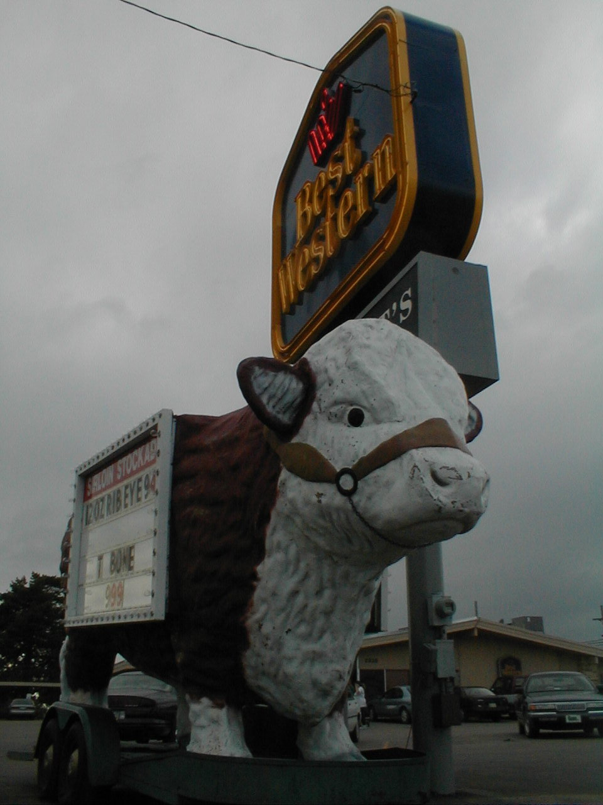

Day 23: June 4, McPherson, KS to Abilene, KSPrevious Day - Home - Next Day Photo of the DayA tourist's dream: a Sirloin Stockade in a Best Western! Keegan's LogDay 23: June 4, McPherson, KS to Abilene, KS Mileage: 63.36 milesWeather: Cool, Low overcast, Strong east-southeast winds Vertical Climb: 800 feet Riding Time: 4:00 This morning we walked to the Sirloin Stockade for breakfast, the air was cold and the wind was strong, almost due east. The skies were covered by a low overcast again, though rain was not in the forecast. We formed up a pace line before we even left the hotel, the first 22 miles of the ride we would be heading straight into the wind before turning north toward Abilene. We moved along at a good clip until Canton, our first chance for a break. The winds were a little lighter than yesterday, maybe 20-25 mph, with some wind from the south as well as the east. We joined another line after we left Canton, so we ended up with probably 15 riders in our line for the last stretch. At 22 miles we reached the turn, what a difference a left turn can make. The wind was now about 30 degrees behind our right sides, but this was enough to push us along at 20 mph for most of the rest of the day. The line broke up as soon as we made the turn, the first sag was about 10 miles down the road. Dad and I had some coffee cake at the Red Barn Café just in front of the rest stop, a few others stopped in as well for a break from the road. Everyone took their time at the rest stop, the last 30 miles to the hotel would be a lot faster than the first 30. Because there were no real stops between the sag and the hotel, dad and I rode the last 30 miles non-stop. The terrain was a little hillier, about like the gentle hills we have at home. We passed wheat, soybean, and corn fields, and lots of grass lands for cattle grazing. Still not many trees, though they are now considered sacred by many of the riders for their mystical wind-blocking properties. We arrived at the hotel not long after 1:00, we actually finished with one of our fastest averages of the trip. Dinner was at the Sirloin Stockade again, but this time the restaurant was attached to the hotel, the ultimate in convenience. I get to see Holly for the first time in weeks when she comes to visit, tomorrow is a rest day you know. Phil's LogCombined with tomorrow's log. |
{kind=link}